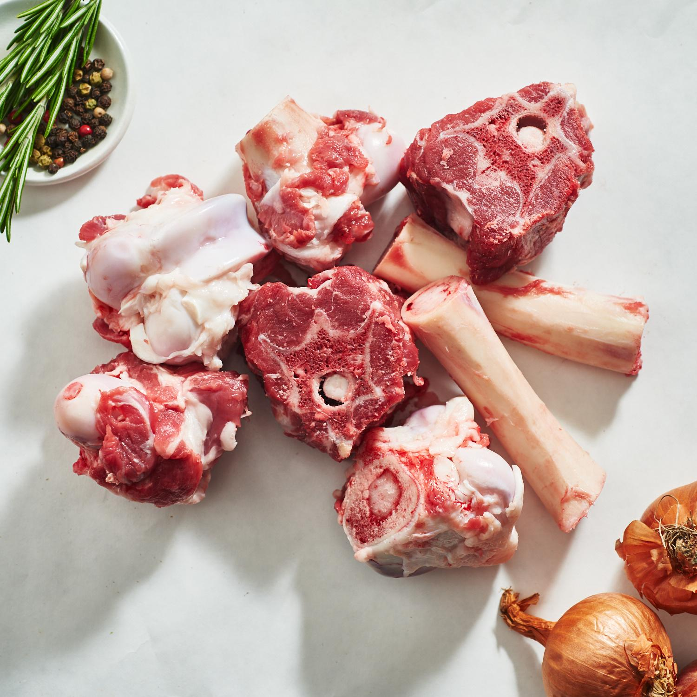
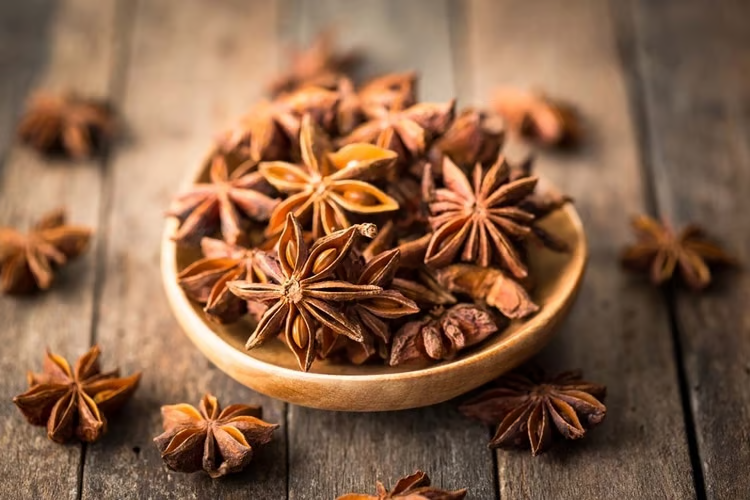
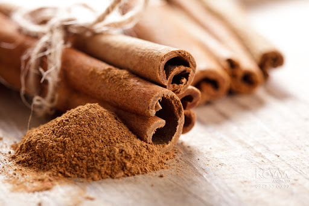

Nước mắm
Vị mặn sâu, hậu ngọt và mùi thơm đặc trưng giúp liên kết nhiều món ăn Việt.
Khám phá vẻ đẹp nguyên bản và vai trò tối thượng của những nguyên liệu cốt lõi làm nên tinh hồn của nước dùng Phở truyền thống. Một bản giao hưởng của hương vị và thời gian.

Đại hồi và Quế chi, linh hồn của hương vị.
"Mỗi nguyên liệu không chỉ là một thành phần, mà là một câu chuyện được kể lại qua ngọn lửa và thời gian."

Nền tảng của mọi tinh túy. Xương ống được ninh râm ran trong nhiều giờ liền để chiết xuất trọn vẹn tủy ngọt và vị thanh tao, tạo nên cốt cách trong trẻo mà sâu lắng của nước dùng.

Sự nồng ấm kiêu sa. Từng cánh hồi được nướng xém nhẹ để đánh thức tinh dầu, mang lại nốt hương cay nồng, ngọt ngào lan tỏa đặc trưng.

Vị ngọt thầm kín. Quế thanh cạo sạch vỏ ngoài, nướng trên than hoa, đóng vai trò như một sợi dây liên kết các hương vị lại với nhau thành một tổng thể hài hòa.
Xương bò được ngâm rửa và chần sơ qua nước sôi cùng gừng và muối biển để loại bỏ hoàn toàn tạp chất, giữ lại sự tinh khiết nhất.
Các gia vị mộc như hồi, quế, thảo quả, hành tăm được nướng trên lửa than hoa cho đến khi vỏ ngoài xém nhẹ và tỏa hương ngào ngạt.
Quá trình ninh xương kéo dài từ 12–16 tiếng trên ngọn lửa liu riu, hớt bọt liên tục để đảm bảo nước dùng đạt độ trong vắt như hổ phách.
Túi gia vị rang được thả vào nồi nước dùng ở những giờ cuối cùng, đủ để hương thơm hòa quyện mà không làm mất đi vị thanh của xương.
Vị mặn sâu, hậu ngọt và mùi thơm đặc trưng giúp liên kết nhiều món ăn Việt.
Húng quế, ngò gai, tía tô, rau răm và kinh giới đem lại độ tươi, mát và hương tầng.
Từ hạt gạo tạo nên cơm, bún, phở, bánh cuốn và nhiều loại bánh truyền thống.
Quế, hồi, thảo quả, gừng, hành nướng là linh hồn của nhiều loại nước dùng.
Lẩu, món kho và canh chua hợp với bữa cơm ấm, nhiều rau.
Gỏi cuốn, chè sen, nước rau má và món luộc giúp khẩu vị nhẹ hơn.
Bánh chưng, giò chả, dưa hành và mâm cỗ giữ vai trò kết nối gia đình.
Một món mặn, một món canh, một đĩa rau và chén nước mắm là đủ thành bữa.